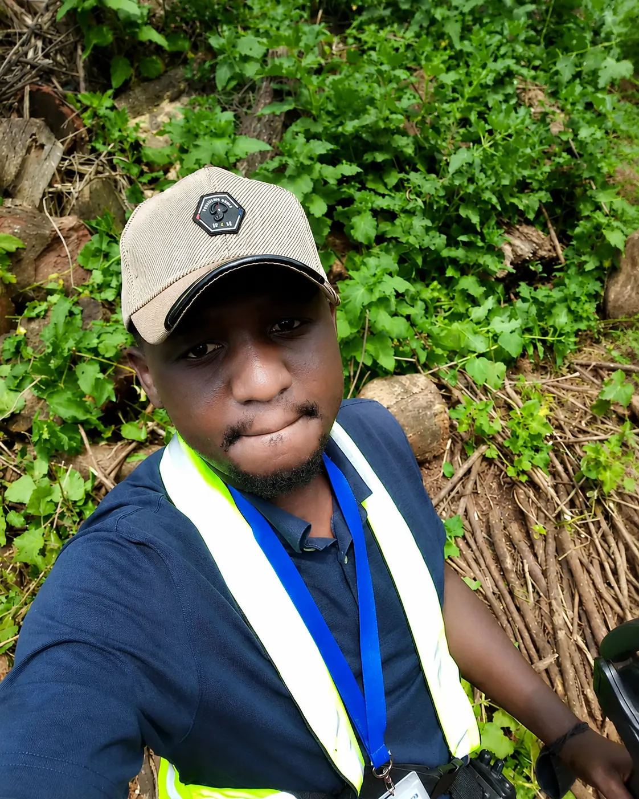
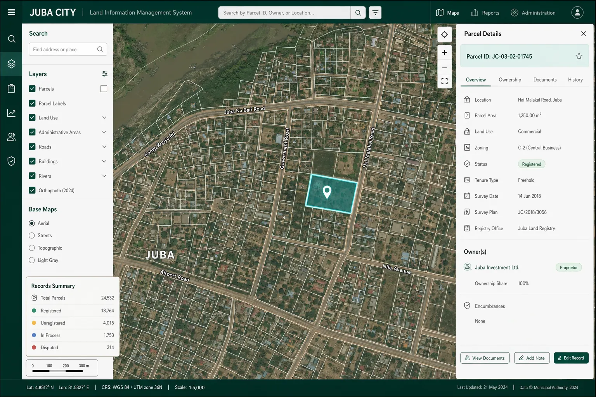
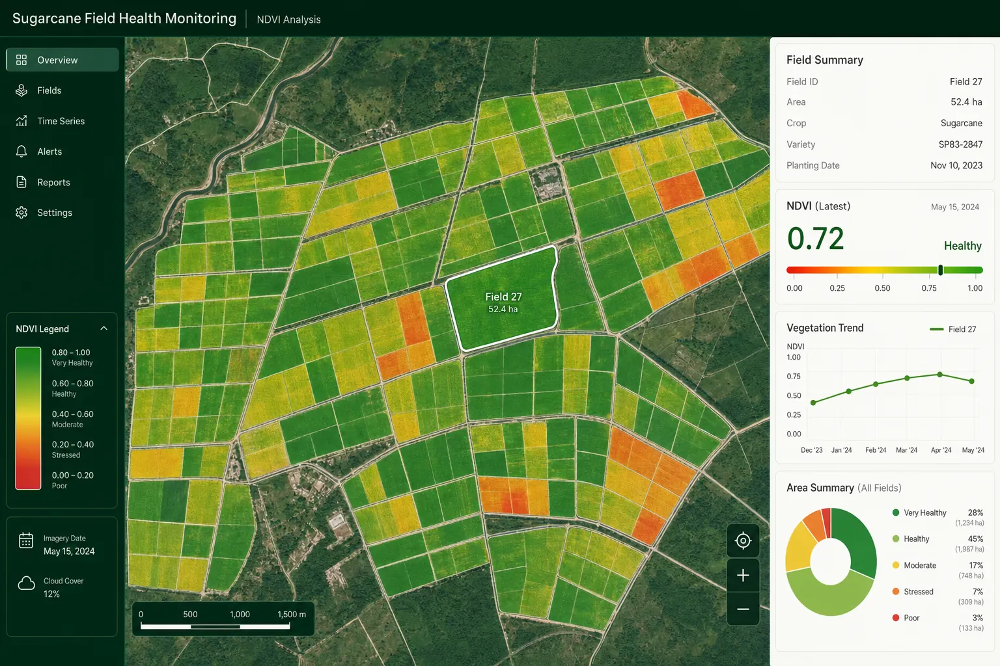
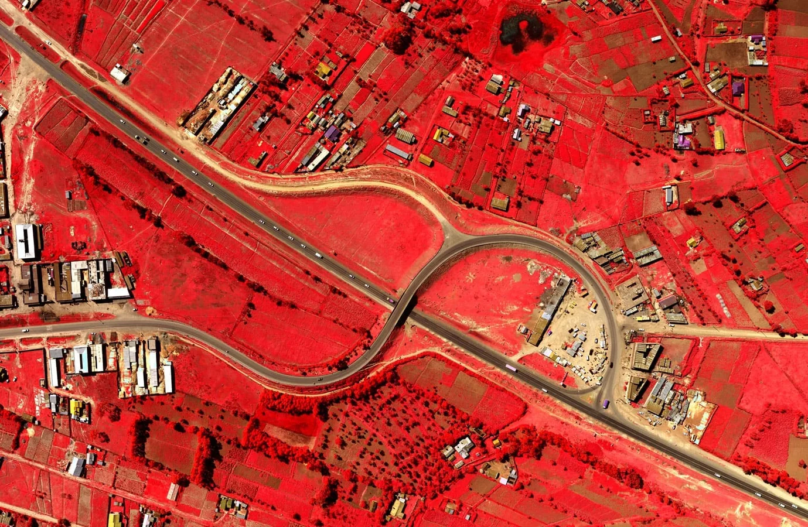
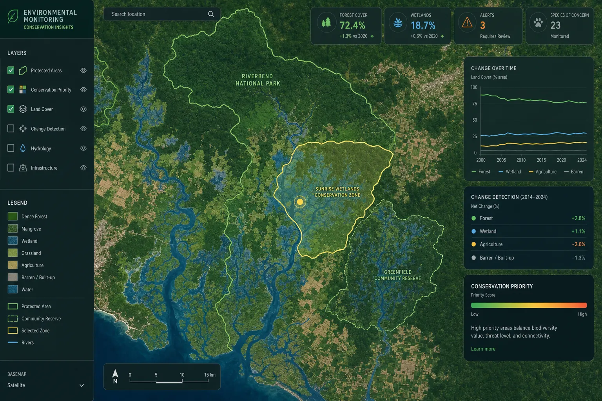
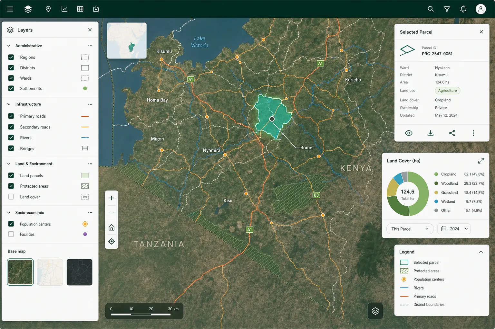

Spatial Analysis & Mapping
I translate complex terrain, network, environmental, and infrastructure data into clean, easy-to-understand map products that stand up to scrutiny.
Geospatial Analyst & Research Specialist
I build spatial data systems, remote sensing workflows, and web dashboards that turn complex data into clear, dependable evidence for decision-makers.

01 · Profile
I am a geospatial specialist whose career has evolved from hands-on data collection to automated workflows, database management, technical research, and team leadership.
Rather than delivering isolated maps, I build connected systems—linking field operations and satellite imagery directly to clean databases and interactive dashboards that your team can rely on.
02 · Capabilities
My technical toolkit is built around four practical outcomes: creating trustworthy data, delivering rigorous analysis, automating repetitive workflows, and providing clear decision support.
I translate complex terrain, network, environmental, and infrastructure data into clean, easy-to-understand map products that stand up to scrutiny.
Structured spatial databases, topology checks, metadata, quality rules, and auditable workflows that keep data dependable.
Satellite-image workflows for vegetation monitoring, change detection, environmental assessment, and scalable analysis.
Python and PyQGIS automation, web maps, dashboards, data pipelines, and interfaces that reduce repetitive production work.
03 · Selected work
Each case study is presented as a problem, role, delivery approach, and impact—not only as a final map.
8 projects displayed

A mapping, database, and dashboard workflow designed to improve access to fragmented land information and support more auditable administration.

Using Google Earth Engine and NDVI workflows to monitor sugarcane health across vast areas and reduce reliance on manual field surveys.
An overhaul of airport spatial records and 3D infrastructure mapping to support operational safety, aerodrome charting, and future planning.

Terrain, network, settlement, and environmental datasets prepared for engineering and planning decisions along a major transport corridor.
Led a 70-person field team to map sugarcane fields and organise the data into a structured database for supply estimation and resource planning.
A dashboard concept connecting spatial and tabular project data to operational reporting for field mapping teams and managers.

Environmental data, remote sensing, and spatial modelling combined to support monitoring, conservation planning, and sustainable resource decisions.

Custom web maps and responsive interfaces that make spatial data accessible to everyday users outside specialist desktop software.
04 · Approach
The strongest geospatial outputs come from a controlled workflow, not a single software tool.
Clarify users, outcomes, accuracy requirements, standards, and the operational questions the work must answer.
Collect, structure, document, validate, and integrate spatial and non-spatial data into a dependable foundation.
Apply repeatable spatial methods, scripts, database logic, and quality checks that can be reviewed and reproduced.
Publish maps, reports, dashboards, databases, or web GIS tools in a form that the intended audience can use.
05 · Experience
My career at Ramani Geosystems has moved through production, team leadership, senior technical delivery, automation, research, and geospatial systems work.
Open full résumé ↗Designing automated QA tools, managing cloud-hosted web GIS workflows, and deploying GeoServer services alongside interactive dashboards.
Supervised production teams, monitored project budgets, and built Python/PyQGIS validation scripts to streamline database quality control.
Coordinated production schedules, oversaw first-level quality control, and managed map production across ArcGIS and AutoCAD workflows.
Terrain editing, digital stereo mapping, LiDAR point-cloud processing, project QA/QC, and technical research.
2D and 3D vector data production, PostgreSQL/PostGIS data integrity, and technical production support.
University of Nairobi · October 2009 — December 2013
Coursework included physical and human geography, environmental studies, cartography, remote sensing, GIS, and spatial analysis.
06 · Contact
Tell me a bit about your project, the data you're working with, and the problem you need to solve.